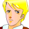
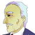
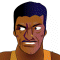

タイトル
|
− The world is yours − |
武装した機動隊員が、合図とともにドアを蹴破り、アジトに踏み込む。
ゲリラも慌てて武器を取ろうとするが、
機動隊員 「全員動くな！ 妙な真似をすると撃つ！ 武器は床に捨てろ！」

青年 「ちっ！ もう嗅ぎ付けてきやがったのか！」機動隊員 「大人しくしてろ！ 逮捕で済ませてやる。どういう理由かは知らんが・・・、本来ならこの場で射殺されても文句は言えんのだぞ」
青年 「みんな、抵抗するな！ お優しい事に逮捕で許してくれるらしいぞ・・・」
機動隊員 「上からのお達しなんでな。ふン。・・・お前がリーダーか？」
青年 「そうだ」
ライフルの柄で殴りつけ、
機動隊員 「連行しろ！」
城とも言える立派な屋敷。その一室に、兵隊に連行される青年。
青年 「痛えなっ、畜生！ 丁重に扱いやがれ」
 国王 「丁重に扱って欲しければ、馬鹿な真似はやめろ」
国王 「丁重に扱って欲しければ、馬鹿な真似はやめろ」
青年 「おやおや。国王様自らお出ましですか」
国王 「いい加減にしろ。セグメントや議会駐在軍に対する武装集団とテロ行為。お前のやっている事は第一級犯罪だ」
青年 「だったら牢にでもブチ込めよ」
国王 「お前が世継ぎでなければそうしている」
青年 「誰が継ぐか。俺のやってる事が第一級犯罪なら、アンタは特級犯罪者だ」
国王 「私の何が犯罪だと？」
青年 「国民の税金でセグメントや議会に尻尾を振ってる事だよ。アンタは宇宙移民者が苦しんでいるのをのうのうと見てる」
国王 「私からくすねた金で革命ごっこをしておいて、言えた立場か。我が国は火星で最も裕福だ。私は宇宙移民より自国民を優先する」
青年 「ああ、そうかい。自分たちさえ幸せなら、他は知った事じゃねえってか。反吐が出るぜ。裕福だってのなら、なんで議会から独立しない！？」
国王 「政治のいろはも知らん小童が。独立など掲げれば、たちまち国ごと潰される。それとも、武力で立ち向かい、人類の半数を死に至らしめた愚行を繰り返したいのか！？」
青年 「飼い殺されるよりは、噛み付いて死ぬね。そのために俺は学んできた」
国王 「わずかばかりの兵隊経験と、傭兵仕事。それでちんぴらを集めて革命家気取りか。自覚がない分、やくざより性質が悪い」
青年 「やくざなアンタの息子だからな」
国王 「まだ反抗期のままか。お前のやっている事はただのお遊びだ。本気で情勢を変えたいのならば、国王の座を継いで変えれば良かろう」
青年 「アンタに染められるのはゴメンだね」
王子の部屋。

執事 「殿下、少し頭を冷やされませんと」青年 「うるさいよ。お前は俺と親父のどっちの味方なんだ？」
執事 「わたくしも陛下も、殿下の味方でございますよ」
青年 「ったく。また１からやり直しだ。親父のやつ、他のゲリラよりまず俺を潰しに来やがる。まさかお前が密告してるんじゃないだろうな」
執事 「滅相もない。ですが、最優先して潰すのは至極当然でしょう。次期国王がセグメントや議会に叛意を抱いていると知られれば、この国に未来はありませんから」
青年 「だから縁を切ってる」
執事 「周囲はそう思いません。４年も代役で国民を騙している陛下の気持ちもお察しになられては」
執事の見せる新聞には、青年そっくりの身代わり。
青年 「不良息子は出てったって発表すりゃイイだろ」
執事 「殿下。殿下はあまりに陛下に似ておいでです」
青年 「はァ？」
執事 「わたくしにはその正義感の強さが身を滅ぼしはすまいかと、心配でございます」
青年 「年寄りの話は長くなりそうだ。ここにも用はないし、失礼させてもらうよ」
執事 「殿下・・・」
屋敷を出ていこうとする青年に、声がかけられる。

団長 「お久し振りです、殿下」青年 「ああ。久し振りだ。よく俺がわかったな」
団長 「出来の悪い生徒でしたからな。覚えもします」
青年 「コイツ・・・」
青年 （こいつは、この国の自警団団長。自警以外に軍備を持てない我々の、数少ない武力をまとめている。俺の、兵役時の上官でもある）
団長 「時に、殿下がガラの悪い連中とつるんで、悪さをしているという噂は本当ですかな」
青年 「説教ならさっき散々聞かされた。今度にしてくれ」
団長 「説教でなければ、聞いてくださいますかな？」
青年 「どういう・・・」
団長 「議会とセグメントの圧政、もはや捨て置けません」
場所を変えたらしく、人気のない部屋。
青年 「驚いたな。アンタは完全に国王派だと思ってた」
団長 「誤解なされないで下さい。私は今でも国王派です。国王は議会やセグメントの犬どもを懸命に払っておいでです。それも、非暴力という立派なお志で」
青年 「はいはい」
団長 「ですが、もはやそれも限界」
青年 「限界？」
団長 「火星で最も裕福なセツルメント。そこに、意のままにならない国王ですから、そのお命が狙われています。犬どもは殿下の身代わりを擁立してこの国を乗っ取る算段」
青年 「穏やかじゃないね」
団長 「叛意は国王の意に背きます。ですが、伏魔殿では国王をお守りし続けることが危うい有様。このままではもう・・・」
青年 「それで・・・、団長・・・」
団長 「殿下を旗印に、クーデターを起こします」
青年 「・・・ッ！」
暗い、パブらしき店。
青年 （自警団という一国の武力。今までとは段違いだ。あるいは成功するかも知れない・・・。だが、それは甘かった。いや、甘過ぎた）
クーデター成立までが止め絵で表される。
青年 （俺を擁立してのクーデターは、行動からわずか３日で完全に鎮圧された。完膚なきまでに）
そして、鎮圧までが止め絵で。
青年 （それも、国自体に叛意があると見なされ、自治失権という最悪の形でだ）
青年 （遠かれ近かれ、こうなったかも知れない。だが、俺は間違いなく、その執行日を決定付けた人間だった）
悔しそうに、だが、敬礼して青年を逃がす団長。
青年 （不幸中の幸いは・・・、団長が俺の代役の身柄を確保していた事。団長の計らいで、俺は生き延びた。身代わりになって死んだ代役には悪いが・・・）
団長の傍らに、射殺された代役。ＴＶがニュースを映している。
アナウンサー 「自警団が起こしたクーデターは、完全に制圧されました。死亡したクーデター首謀者は、自警団団長である・・・」
青年 （挙げられる名前の中に、俺の名前はなかった。むしろ、俺の代役が殺された事で、クーデターは、セグメントや議会に対してではなく、祖国に対するものとされ、団長は完全な悪役にされちまった）
団長の顔がＴＶに映される。
人気のある大公園。蒔かれた号外が一部、青年の足元へ。それには、国王の写真。
青年 （数日もしないうちに、衝撃的なニュースが国内を駆け巡った。国王・・・、親父が死んだのだ。死因は服毒自殺）
青年 （責任を取っての自殺、テロリストの残党の仕業、自治失権を完全なものとするための謀殺。・・・色々な噂が流れた）
青年の前に現れる執事。
執事 「殿下・・・、あのような事件がありませんでしたら、陛下とお呼びするべきかも知れませんな」
青年 「お前、よく無事で・・・」
執事 「陛下からの、最期の贈り物でございます」
青年 「・・・親父の・・・」
執事 「陛下のお志を継ぎませよ」
青年 「受け取ったキャッシュ・カードには、莫大な金が振り込まれていた。それこそ、新しくセツルメントを建造出来るほどの・・・」
青年 （親父の死の真相は、間違いなく自殺だ。謀殺だと匂わせるための自殺・・・。団長たちが言ったように、親父は内心に叛意をしたため続けていたのだ・・・）
青年 （実際に、この事件を機に、セグメントや議会に対する不満はその目を吹き出した）
青年 （自らをエクレシアと名乗る反乱軍の誕生だ）
青年 （俺は、この莫大な遺産を使って、エクレシアを支援しようとした）
青年 （だが、エクレシアを支援する金持ち連中どもに、俺はきな臭いものを感じ取った）
青年 （ユニオンＪ・・・。それが、エクレシアを、いや、セグメントや議会すらも影から操っている・・・）
青年 （親父が、戦おうとしたのは・・・）
青年 （戦わなければならない敵は・・・）
青年 （違うやり方で。もっと違う方法で。・・・あるはずだ。必ずユニオンを引きずり出す。引きずり出して潰してやる）
マトリックス。
 クルー 「艦長、見てくださいよ。コレが夕焼けってヤツですかぁ。・・・艦長？」
クルー 「艦長、見てくださいよ。コレが夕焼けってヤツですかぁ。・・・艦長？」
 ボッシュ 「んあ？」
ボッシュ 「んあ？」
クルー 「艦長が居眠りとは珍しい。まあ、ここの所、緊張続きでしたしね」
ボッシュ 「ああ。すまん。で、何だって？」
クルー 「夕焼けです」
ボッシュ 「ほお」
クルー 「起こしちゃって悪かったんですが、その価値はありました？」
ボッシュ 「まあな。・・・火星しか知らない親父達にも見せてやりたかったね」
クルー 「そういや、艦長から家族の話を聞いた事ありませんね。やっぱり海賊だったんですか？」
ボッシュ 「いや、最強のインテリやくざだな。いや、非暴力テロリストか」
クルー 「はははっ、なんですそりゃ？」